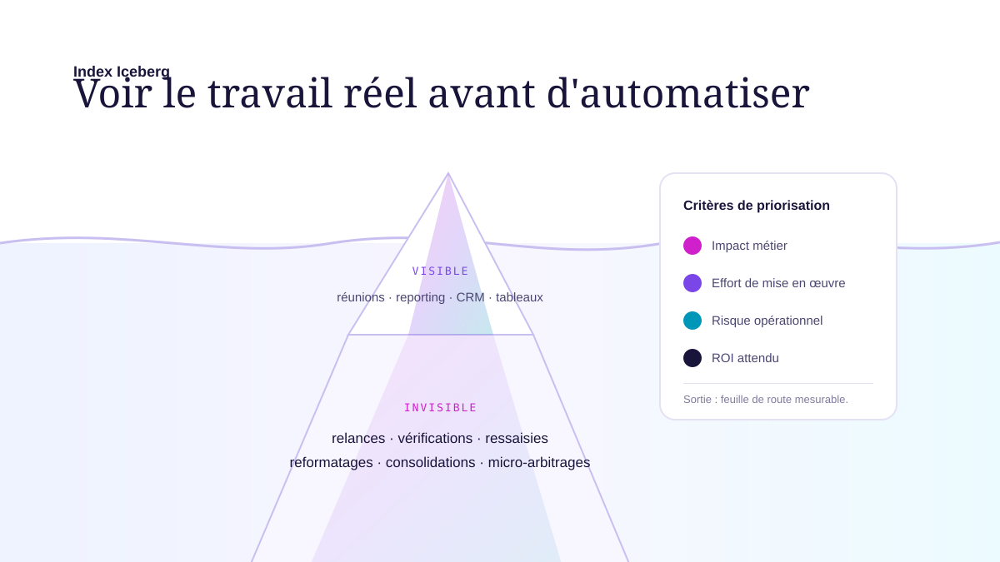

Index Iceberg :
voir ce que l'IA peut vraiment traiter
80% des tâches chronophages ne sont jamais déclarées dans les entretiens. L'Index Iceberg les révèle — et les chiffre — avant tout investissement IA.
Ce que vous voyez n'est pas ce qui vous coûte
Dans toute organisation, les équipes déclarent une fraction de leur travail réel. Réunions, rapports, appels — ça, vous le voyez. Mais les re-saisies entre outils, les vérifications manuelles en boucle, les consolidations chronophages, les recherches d'information éparpillée — ça, personne ne le formalise.
C'est l'Iceberg. Et c'est précisément là que l'IA crée le plus de valeur : sur les tâches que personne ne mesurait, pas sur celles déjà visibles.
- Réunions et comptes-rendus
- Emails et relances clients
- Rapports hebdomadaires
- Saisies CRM déclarées
- Préparation de devis
- Re-saisies entre outils non connectés
- Recherche d'information dispersée
- Vérifications manuelles répétitives
- Reformulations et corrections en boucle
- Consolidations de données chronophages
- Relances oubliées et suivis perdus

Partir du métier, pas de la technologie
La plupart des prestataires IA partent d'un outil. Think'UP part de vos marges, vos délais, votre charge.
4 étapes — de l'invisible au résultat mesurable
Observer : le travail réel, pas le travail déclaré
On observe, on mesure, on chronomètre. Pas d'entretiens classiques où les équipes décrivent ce qu'elles devraient faire — mais des sessions d'observation du travail réel.
- Interviews métiers structurés avec les équipes opérationnelles
- Observation des flux de travail réels, pas des processus théoriques
- Mesure du temps consommé par catégorie de tâche
- Identification des irritants, points de friction et erreurs répétitives
- Cartographie Iceberg complète : visible vs invisible, chiffrée
Prioriser : un business case par projet IA, avant de décider
Chaque opportunité IA est évaluée selon trois axes — impact sur le métier, effort d'implémentation, niveau de risque. Le ROI est chiffré avant de décider, jamais après.
- Évaluation du potentiel d'automatisation par tâche identifiée
- Business case synthétique : temps libéré, coûts évités, gains qualitatifs
- Arbitrage impact / effort / risque, documenté et partageable au CODIR
- Roadmap priorisée avec jalons et indicateurs de succès clairs
Mettre en œuvre : les bons experts, au bon moment
Pas de recrutement d'équipe IA interne. Think'UP coordonne un réseau de freelances spécialisés avec un pilotage rigoureux côté métier.
- Rédaction de cahiers des charges métier précis et exploitables
- Sélection et briefing des experts IA adaptés à chaque projet
- Challenge des devis et des approches techniques proposées
- Suivi des livrables avec validation côté métier à chaque étape
Mesurer : comparer au business case, ancrer dans la durée
Un projet IA réussi se mesure. Think'UP suit les gains réels, compare aux objectifs initiaux et ajuste si nécessaire.
- Indicateurs de résultats : temps gagné, erreurs évitées, ROI effectif
- Comparaison systématique avec le business case initial
- Ajustements basés sur les retours terrain des équipes
- Transfert de compétence pour réduire la dépendance externe
Où se cache votre Iceberg IA ?
En 30 minutes, Patrick Langlais identifie les premières zones de gains potentiels dans votre entreprise.